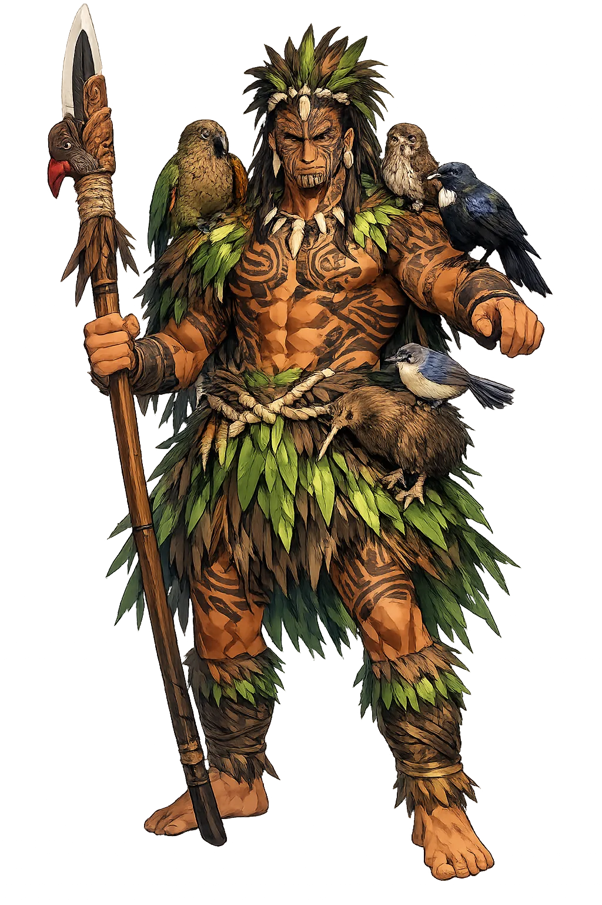

Unicode restoration and ASCII comparison
Tāne
The name survives only in scholarly transliteration. Tāne is the standard Polynesian romanisation, documented in academic sources — “Man (from Proto-Polynesian *tane)”. Its macron-length vowels preserve distinctions lost in plain ASCII.
No indigenous writing system is securely attested for individual polynesian names. The form shown is a modern scholarly transliteration.
tane
Reduced to plain tane, the name loses everything that made it specific: macron-length vowels. What remains is an ASCII string that machines can parse but that no longer speaks with its original voice.
Tāne
The Unicode restoration recovers what ASCII flattened. Tāne restores macron-length vowels, returning the name to its original written dignity. The domain encodes to Punycode, but the browser displays the truth.
Tāne.com → xn--tne-1oa.com
The non-ASCII characters in Tāne are encoded while the ASCII remains visible. To the DNS, it is Punycode. To humanity, it is Tāne.
How Tāne is preserved in writing
No indigenous writing system is securely attested for individual polynesian names. The form shown is a modern scholarly transliteration.
Contribute scholarly provenance →Owned, ideal, and ASCII forms of Tāne
Tāne
The live temple domain — tāne.com.
tane
The plain ASCII fallback — what DNS and legacy systems see.
How Tāne was spoken
Creator, Separator, and Ancestor
Tāne is the forest made conscious, the bird made ancestor, and the man made god. In Māori cosmology he is the child who separated earth and sky, the father of humankind who shaped the first woman from clay, and the lord of every tree and winged thing. He stands at the axis of nature and culture, the one who makes space for life by pushing upward.
He pushed Ranginui upward with his legs, creating the space in which the world exists.
Tāne-mahuta rules the trees and all creatures that live among them, especially birds.
He formed the first woman, Hineahuone, from red clay and breathed life into her nostrils.
He climbed through the twelve heavens to obtain the three baskets of knowledge for humankind.
Stories of Tāne
Tāne's myths are central to Māori cosmogony. He is the active principle of separation, the ancestor of humankind, and the culture hero who brings knowledge from the sky. The narratives are preserved in nineteenth-century written versions of oral tradition.
Born in the darkness between Ranginui and Papatūānuku, Tāne and his brothers longed for light and space. While Tū urged violence, Tāne turned onto his back and pressed his feet against Ranginui, pushing the sky upward. The parents were separated, and the world was born in the space between them. Ranginui wept tears of rain; Papatūānuku's mist rose to meet him. (Grey, Polynesian Mythology.)
Tāne sought to create a companion. He shaped Hineahuone, 'Earth-formed woman,' from red clay at Kurawaka, the place where the earth's female essence was most concentrated. He breathed into her nostrils through the hongi, the pressing of noses, and she came to life. Their daughter was Hinetītama, who later became Hine-nui-te-pō, guardian of the underworld. (Best, Māori Religion and Mythology.)
To bring wisdom to humankind, Tāne climbed through the twelve heavens, passing guardians and trials, until he reached the supreme realm of Io. There he obtained the three kete of knowledge: the kete of sacred rituals, the kete of memory and tradition, and the kete of spiritual understanding. His descent made human learning possible and established the priestly authority of those who guard the knowledge. (Smith, The Lore of the Whare-wananga.)
Tāne begins as a word for 'man' and becomes the god who makes the world spacious enough to live in. That trajectory is itself a meditation on masculinity: not the masculinity of domination, but of upward pressure, of making room, of separating so that others can breathe. He does not kill his father; he lifts him. He does not abandon his mother; he stays beneath her, supporting life upon her body.
Enter Extended Lore